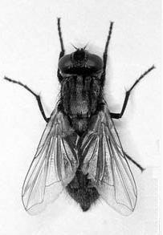

| Занимательная вирусология. Часть 6 |
|---|
[ На обложку "Занимательной вирусологии" ]
Перед Вами шестой выпуск. В очередной раз напоминаю, что и предыдущие выпуски изредка обновляются: добавляются фотки в "Третьяковскую галерею", расширяется список вирусологических книжек в "Книголюбе" и т.п., так что не забывайте полазить мышкой по линкам, авось обнаружите что-нибудь новенькое для себя.
|  |
|
Заодно загляните сюда: |
| Чаво и скока |
|---|
Кажется, вирусы, как саморазмножающиеся программы, начали стремительное вымирание. Вот примерный график появления новых вирусов, который я составил по разным источникам и по собственным понятиям. J
На этом графике нет телефонных вирусов, которые только начинают раскрутку (сначала 2, через год - 15, etc...) и поэтому просто не видны в масштабе картинки. Еще может показаться странным малое количество червяков, но разве о того, что старую версию Бигля закрутили новой версией UPX-а и пустили ITW, появилось что-то новое? А еще нет троянов, всех этих неразмножающихся тупых и гадких шпионов, пинчеров, кликеров и даунлоадеров, которых за последние 3-4 года настругали столько, сколько всех остальных типов заразы за все 20 лет.
Что было основным движущим мотивом вирусописателей лет 15-18 назад? Самоутверждение. Изучи язык ассемблера, разберись в вопросе, напиши сам размножающуюся программу, хотя бы и самую примитивную.
Что заставляло писать вирусы лет 10-12 назад? Азарт. Лозинский-Данилов-Касперский круты, но и ты не пальцем делан - в твоем вирусе не сразу разобрались, потом долго удивлялись и даже посвятили несколько абзацев в вирлисте.
Что побуждало писать заразу лет 3-5 назад? Честолюбие. Напиши такого супер-пупер червяка, который облетит весь мир, и все будут говорить о тебе и твоем опусе, от бабок на скамейке до американского презика, хотя бы даже и не зная, что это именно ты его написал.
А что сейчас? Да ничего. Нынче за "заразу" деньги плотют, особенно если она спам с собой разносит (типа как комары малярию или клещи энцефалит). Какой-такой ассемблер-шмассемблер? Напрягайся поменьше, да заколоти лавэ побольше. Благо, что все за тебя уже придумано и сделано, имей только часть тела, чтобы мышиные кнопки нажимать:
| "Как вы яхту назовете..." |
|---|
Еще раз про терминологию, блин.
"Настоящий" вирус - это молекула сложного органического вещества (нуклеиновой кислоты), которая вступает в химическую реакцию с ДНК живого организма и умеет перестраивать ее так, что клетки с модифицированной ДНК начинают заниматься репликацией вируса. Самостоятельно, без клетки-носителя, вирусы размножаться не могут и вне ее представляют собой довольно инертные химические соединения. Некоторые вирусы в ходе эволюции, длящейся тысячи и миллионы лет, сделали шажок от "вещества" к "существу" - приобрели свойства, улучшающие их защищенность от внешней среды и проницаемость в клетку, а именно: белковую оболочку многогранной формы, всякие там усики и т.п. Другие, более примитивные, так и остались голыми молекулами - это "вироиды". Наконец, есть еще странные вещества - "прионы", которые обходятся без генного материала (нуклеиновых кислот), а представляют собой "недостроенный" белок, который ногда непонятным пока образом побуждает клетку "достраивать" его до конца, что ему, гаду, и нужно.
Посмотрите, какие "кросафчеги"!
Первооткрыватель вирусов - русский ботаник Д.И. Ивановский, который в 1892 году занимался изучением "мозаичной болезни" табачных листьев.
Он с самого начала считал свою находку живыми существами. Его основным оппонетном был голландский микробиолог М. Бейеринг, который отстаивал "химичность" вирусов. Именно он предложил термин "virus", вкладывая в него смысл "ядовитое вещество". Как впоследствии оказалось, в вопросе о "живости" вирусов Ивановский ошибался наполовину, а Бейеринг - на все 100. Но термин - остался.
В 1984 г. на одной из конференций по компьютерной безопасности Фред Коэн употребил термин "компьютерный вирус", связывая его с саморазмножающимися программами. (Кстати, сам Коэн позже отмечал, что он только первым обнародовал термин, а придумал его Л. Адлеман, один из авторов криптосистемы RSA).
Сейчас существует много разных вирусных классификаций, но большинство специалистов считают, что следует выделять:
Еще раз cпециально для гг. журналистов: неразмножающиеся вредоносные программы - это не вирусы !!!
| Про блины |
|---|
Помните ли вы "армейский" макровирус, который воевал с каким-то там "блином"? Cпасибо Алексу Гостеву за вот эти любопытные материалы, позволившие продолжить тему.
|
Стелс-вирус. Содержит макросы: AutoOpen, AutoExec, FileSave, FileSaveAs, ToolsOptions, ToolsMacro, ViewVBCode. При открытии файла вирус выключает опцию VirusProtection и DisableAutoMacros. Заражение происходит при открытии, закрытии и сохранении с другим именем документов (AutoOpen, FileClose, FileSaveAs). При вызове меню Tools/Macro и File/Templates вирус убирает свое тело из зараженного документа. При попытке просмотреть код макроса вирус вызывает системную функцию FatalAppExit и выводит сообщение: "Модуль WinWord вызвал фатальную ошибку ври вызове VBA! Code : dd!Actor"
Если при заражении файла или запуске MS Word значение часов и минут совпадут (например 8:08) вирус устанавливает в настройки Word правило автокоррекции заменяющее знак "," на ", блин," и выводит MessageBox:
|
Вы прикололись? Я - таки да.
| Новая книжка от Криски |
|---|
Помнится, лет 6 назад после "Техники и философии хакерских атак" К. Касперски запланировал еще "Сетевые атаки" (из которых вышел только 1-й том) и "Вирусные атаки" (которые вышли год назад под названием "Записки исследователя...", и я их уже упоминал). Видимо, "аффтар" запал на вкусную тему. И вот он, очередной опус К. Касперски "типа про вирусы":
Ну да, имеется в книжке штук 30-40 неплохих страниц, особенно про PE-формат. Про этот формат только ленивый не писал, а Крис все-таки внес свежую струю - рассмотрел граничные условия (типа некорректных значений в полях заголовка), на которые обычно редко обращают внимание. Но почти полтысячи остальных страниц - сплошная водопроводная вода без какой-либо конкретики, зато с потугами на философичность. Кроме того, процентов 80% всей книжки уже заранее было опубликовано в журналах или обнародовано в Интернете.
Даже и не знаю, отнести эту книжку в "черный" или в "белый" список, ибо кроме названия, больше про вирусы в книжке почти ничего нет. Общий вывод: макулатура. L
З.Ы. Есть инфа, что Крис обещает разродиться "Вирусами-III". "Ужоснах"! Эк его изнутри распирает, словно от гороховой каши...
| "Я русский бы выучил только за то..." |
|---|
И снова про макровирусы. Почему-то принято считать, что этот вид заразы уже не актуален. Не знаю, whom how, а ко мне регулярно самоходом попадают интересные экземпляры. Вот недавно, например, приполз знаменитый в свое время Proverb. Чем он знаменит? А вот:
|
Русский вирус добрался до Тони Блэра раньше Путина
За несколько дней до визита в Великобританию Владимира Путина в Лондон в резиденции премьер-министра Великобритании Тони Блэра был обнаружен странный компьютерный вирус российского происхождения. Как передает ZDNet со ссылкой на британскую прессу, российский вирус, оккупировавший дом на Даунинг-стрит, 10, был получен по электронной почте отделом, ответственным за распространение информации о "проблеме-2000". Процесс информирования в этом отделе оказался налажен так хорошо, что вирус быстро распространился по всем региональным отделениям Главного управления по информации (Central Office for Information, COI). Данный макровирус W97M/Proverb не приводит к удалению информации и не считается опасным. Все, что он делает, - это распространяется по почте и выдает пользователям зараженных компьютеров загадочные русские поговорки типа "Никогда не откладывай на завтра то, что можно выпить сегодня" или "Мужчина гоняется за женщиной до тех пор, пока она его не поймает". Представители дома на Даунинг-стрит пока не смогли ответить на вопрос, удалось ли уже ликвидировать вирус или сотрудники резиденции британского премьера все еще страдают от всплесков непостижимой русской мудрости, начавшихся накануне визита российского лидера. |
Разумеется, вирус был декомпилирован, изучен...
...и посажен в пробирку. Интересно, а Тони Блэр выучил русский язык, хотя бы для того, чтобы понять, что же непостижимо мудрое хочет ему поведать загадочный вирус?
| Осторожно: журналюги -3 |
|---|
Вот еще вопиющий случай. Читаем и офигеваем:
|
http://www.newsinfo.ru/news/2006/05/news1312536.php:
Воронежский умелец держал в напряжении весь Рунет.
Сергей Казачков, студент из Воронежа, осужден за беспрецедентное вредительство в Интернете. Казачков создал два сайта, на которых разместил 4 тысячи компьютерных вирусов. Кроме того, молодой человек создал и распространил в электронном виде собственную вредоносную программу, которая не обнаруживалась современными антивирусными средствами контроля. Суд приговорил воронежского компьютерного гения к двум годам условно с испытательным сроком 1 год. Среди разработок Казачкова - нашумевший "Чернобыль" - первый вирус, способный наносить вред аппаратному обеспечению компьютера, уничтожая содержимое микросхемы Flash BIOS. Попутно "Чернобыль" стирает информацию на всех локальных дисках. http://echo.msk.ru/news/308728.html:Студент одного из воронежских вузов Сергей Казачков получил два года условно за распространение в Интернете компьютерных вирусов. Казачков – автор печально известной программы "Чернобыль", которая причинила значительный ущерб пользователям во многих странах мира. "Чернобыль" стал первым в истории компьютерным вирусом, способным наносить вред аппаратному обеспечению компьютера, помимо этого "Чернобыль" способен уничтожить всю информацию на локальных дисках. http://www.rg.ru/2006/05/02/haker-chornobyl-anons.html:Создатель компьютерного вируса "Чернобыль" приговорен к двум годам лишения свободы условно
В Воронежа суд признал виновным студента одного из технических вузов Сергея Казачкова, создавшего компьютерный вирус "Чернобыль". Как было установлено в ходе следствия, Казачков в целях умышленного распространения вредоносных компьютерных программ создал в российском сегменте Интернета два сайта, на которых разместил более четырех тысяч доступных для копирования опасных компьютерных вирусов, в том числе разрушительную программу "Чернобыль", которая уже причинила значительный ущерб пользователям ЭВМ во многих странах мира. Суд назначил хакеру наказание в виде двух лет лишения свободы условно с испытательным сроком 1 год. Об этом сообщил начальник группы общественных связей управления ФСБ РФ по Воронежской области Павел Большунов, передает РИА Новости. |
Разве "Чернобыльский" вирус написал не тайванец Чен Инг Хау в 1998 году? Разве об этом не знает весь мир? Оказывается, еще остались тупые и невежественные индивидуумы - журналисты нескольких новостных сайтов, которые об этой истории раньше ничего не слышали, зато поимели наглость срочно высосать из немытого пальца свой "авторитетный комментарий". Кстати, почему авторы заметок на разных там газетах.вру анонимны? Журналюги любят брызгать слюнями на тему "права на информацию". Нехай прежде научатся подписываться под своим враньем и отвечать за него. "Розовых кофточек", "Доренков" и прочих информационных трупоедов надо отправить разгребать дерьмо на помойках граблями, в этой роли они безопасней и полезней для общества!
Да, а что насчет гражданина Казачкова? А ничего особенного. С одной стороны, сам виноват. С другой стороны, наши доблестные правоохранительные органы вместо того, чтобы просто прикрыть сайт с устаревшими и практически неработоспособными в современных операционных системах вирусами, устроили на пустом месте громкий показательный процесс в стиле 38-го года и продемонстрировали свои "успехи в борьбе с киберпреступностью". Молодцы. Размялись. Получили признательные проказания. Довели дело до суда. Поставили галочку. Отчитались. Ага. А реально работать, настоящих спамеров и кардеров кто ловить будет? Адмирал Иван Федорович Крузенштерн?
| Урок криптографии |
|---|
Очень поучительный урок преподал нам всем автор троянца GpCode. Напомню, этот троянец, попав на машину по электронной почте, шифрует наиболее важные для пользователя файлы (.doc, .xls и т.п.), а потом вымогает за расшифровку некоторую сумму.
Особенность метода шифрования RSA, примененного в заразе, заключается в том, что ключи для шифрования и расшифровки - различны. Таким образом, даже досконально изучив код вируса, совершившего это черное дело, расшифровать файлы очень и очень непросто. Вот, судите сами.
a) вирусописателем выбираются два секретных простых числа p и q;
б) рассчитываются несекретное n=pq и секретное m=(p-1)(q-1);
в) выбирается несекретное число E, взаимно-простое с m;
г) при помощи модифицированного алгоритма Евклида рассчитывается секретное D такое, что ED mod m = 1.
д) шифрование числа X выполняется по формуле: Y=XE mod n ключом E, который можно найти в теле вируса.
Расшифровывание же выполняется по формуле X=YD mod n секретным ключом D, который остался у автора вируса.
Пример: пусть p=3, q=11, E=7, значит n=33 и m=20. Открытый ключ составляет пара (E=7, n=33), ее можно засунуть в вирус и использовать для шифрования файлов. Пусть маленький файл содержит единственное число X=2. Вирус шифрует его: Y=XE mod n = 27 mod 33 = 128 mod 33 = 29. Для расшифровки надо знать D такое, что 7D mod 20 = 1 (т.е. 7D- 20k=1, k - некоторое целое). Автор вируса знает и m и E, поэтому он легко рассчитывает D = 3 и сможет расшифровать файл, когда ему пришлют выкуп: X = YD mod n = 293 mod 33 = 24389 mod 33 = 2 - результат расшифровки.
Вирусологи же имеют только то, что содержится в вирусе, т.е. пару (E=7, n=33). Могут ли они узнать ключ D и расшифровать файл? В принципе, да. Для этого им надо взять n, разложить его на сомножители p и q, вычесть из них 1, перемножить... ну, дальше понятно.
И вот тут начинается самое интересное. Пока n=33, легко представить его в виде произведения 11 на 3 (т.е. факторизовать его). А если n = 114 381 625 757 888 867 669 235 779 976 146 612 010 218 296 721 242 362 562 561 842 935 706 935 245 733 897 830 597 123 563 958 705 058 989 075 147 599 290 026 879 543 541 ?! Это число не могли разложить на сомножители 17 лет, пока наконец, в 1994 году, распараллелив задачу на 1600 компьютеров, не сумели в течение 220 дней непрерывного счета добиться результата. С этих пор факторизация все больших и больших чисел стала чем-то вроде компьютерного вида спорта. В зачет идут и количество битов в факторизованном числе, и затраченное время. Вот, посмотрите на последние результаты: http://www.rsasecurity.com/rsalabs/node.asp?id=2093. Обычно для этого требуются сотни компьютеров (или один компьютер с сотнями процессоров) и месяцы машинного времени. Например, разложение на сомножители числа длиной 640 битов (осень 2005 года) потребовало 30 компьютеров и около 5 месяцев непрерывной работы.
А что же автор вируса GPCode? Первая версия использовала ключ длиной 56 битов, с ней вирусологи справились на ура. Потом последовали 262 и 330 битов. И с ними вирусологи, немножко поднапрягшись (6 компьютеров, ночь работы) разобрались, чем очень и очень горидились. На закуску последовало 660 битов - рекордная длина. И... через несколько часов Лабратория Касперского заявила, что шифр побежден. Триумф... скандал... врут?
Не стоит восхищаться. И не стоит возмущаться. Лаборатория Касперского и не заявляла, что им удалось факторизовать число длиной 660 битов. Значит, шифр вскрыт как-то по другому. Может быть, автор вируса выбрал неудачные значения p и q. Может быть, кто-то выкупил у него расшифровывающий ключ D, а потом переслал его вирусологам. Может быть, сам файл зашифрован каким-нибудь простым легко вскрываемым шифром, а методом RSA закриптован только первичный ключ.
Как бы то ни было, современная вирусология - это уже не борьба 20-строчечного антивируса на языке Си против 100-строчечного вируса на языке ассемблера. Это нетривиальные алгоритмы и не самая простая математика. Это игра на гроссмейстерском уровне. Это интересно. Это красиво. Это увлекательно.
Для тех, кто понимает... J
P.S. Разгадка нашлась летом 2007 года на стр 28 в книжке Е. Касперского "Компьютерное Zловредство". Цитирую:
|
"Однако, нам удалось "угадать" правильный метод подбора ключа, поскольку автор троянской программы допустил ошибку при его генерации..." |
Действительно, требование простоты p и q, а так же взаимной простоты E и m - это просто общие математические условия, при которых метод корректно работает. Но ведь существует и масса других, "криптографических" условий, которых автор GPcode, видимо, не учел. Например, смотрите: пусть p=3, q=7 и E=5. Тогда n=21, m=12, а D=... внимание!.. D=5 ! Открытый и закрытый ключи равны!!! Т.е., при этих числах метод математически работает (проверьте!), но с криптографической точки зрения бесполезен. Видимо, и автор GPcode прокололся каким-то аналогичиным образом, подводных камней в RSA хватает.
Вот какие страсти-мордасти кипят...
P.P.S. Говорят, осенью 2008 г. автора вроде бы пымали. Ню-ню...
| Зачем вы, девочки -3 |
|---|
Рекомендую - Джона Рутковска. Вирусы, правда, не пишет, зато в руткитах шарит на мировом уровне.
И совсем не мымра сушеная, и ножки у нее вполне симпотные. J
| Я русский бы выучил только за то... |
|---|
В спомнил я, что вирусологи стараются давать вирусам имена совсем не те, которые хотят им навязать авторы вируса. Никогда и ни за что не идти на поводу у вирмейкеров, пусть даже в такой мелкой малости! И не упускать возможности лягнуть оступившихся коллег!
Хе-хе. А теперь посмотрите на избранные имена вирусов, придуманные вирусологами в рамках безукоснительного следования этому гордому принципу.
Kaka
Kakashka
Zhopa
Hooy
Pizdrop
Poebot.a
Вот еще мне нравится:KanalDurak. Короче, сплошная Sramota!
| Первый вирус в космосе! |
|---|
Первый человек в космосе - наш космонавт Гагарин. Первый человек на Луне - американский астронавт Армстронг. Первый компьютерный вирус в космосе - китайский тайкунавт Gammima.AG (aka Win32.NSAnti.r).
Представитель обширного класса примитивных козявок, прописывающих свой запуск в AUTORUN.INF флэшек. Предназначен для похищения секретных пассвордов к онлайновым игрухам (Maple Story, R2, ZhengTu, Seal Online и т.п.).
Теперь понятно, чем они там на МКС занимаются. J
З.Ы. Впрочем, ни фига не первый.
| И еще две книжки 2006-2007 годов |
|---|
Вот еще две книжки на мою полку. Вышли в 2006-2007 годах.
1. Касперский Е. Компьютерное Zловредство. - СПб.: Питер, 2007. - 208 с.
Этакая научная популярщина для продвинутых юзеров. Что такое вирусы и трояны, откуда они берутся, с чем их едят. Плюс история вирусов глазами Каспера, с фотками наиболее одиозных вирмеров. Плюс (куды ж без них!) описания наиболее интересных зверьков. Плюс CD с КАВ-ом 7-ой версии и 6-месячным ключом.
Ожидал, конечно, немножко большего. Годичного ключа, например. J Но, в общем-то, не разочарован.
2. Собейкис В. Г. Азбука хакера 3. Компьютерная вирусология. - М.: Майор, 2006. - 512 с.
А это экспонат для черного списка.
Вирусология, вообще, полна всяческих мифов. Одни умирают, рождаются другие... Но вот Варфоломей Гаврилыч Собейкис, автор этой книжульки с обложкой кислотной расцветки, решил придумать свои мифы. А, может, не придумать, а сплагиатить из статей американских журналистов 20-летней давности. Вся книжка кишмя кишит какими-то дикими историями (про которые никто не слышал), именами никогда не существовавших групп, названиями никому не известных вирусов и т.п. Ну вот, например, навскидку - про то, кто на самом деле пишет вирусы:
| ...Осенью 1987 года один из американских университетов, выполнявших заказ военных ведомств, создал вирус, который инфицировал диск с операционной системой и мог переходить на другие диски, где копировал себя, а после четырех поколений разрушал файловые системы всех доступных дисков. Этот вирус был засекречен, но Билл Гейтс... добыл его. В ту пору он вел конкурентную борьбу с Apple. |
Ну, и прочая чушь. Вместо вируса Морриса, заразившего 6000 машин, в книжке появился какой-то "вирус Интернет", остановивший работу 60000 серверов. Вместо вируса Yankee Doodle какой-то Old Yankee. Ну, и т.п.
Ну, а большая часть книжки посвящена... да-да, вы не ошиблись!... написанию COM-вирусов для DOS. Автор пошел дальше Хижняка. Он даже рассмотрел резидентные вирусы! Молодец! Гений! J
Вердикт: КГ/АМ. Больше и сказать-то нечего.
| Еще один попался! |
|---|
Недавно попался еще один придурок, который... Впрочем, дадим слово журналистам. Честное слово, у них получается лучше. Я читал и прям весь плакалЪ.
(17.02.2009)
|
В Калининграде в понедельник осужден создатель компьютерного вируса «Пенетратор», уничтоживший около тысячи компьютеров на другом конце страны – в Амурской области. 21-летний студент калининградского филиала Московского госуниверситета экономики, статистики и информатики (МЭСИ) Дмитрий Уваров получил минимальное наказание – штраф в размере 3 тыс. рублей. Судья Татьяна Станкевич не нашла в действиях студента отягчающих обстоятельств и применила довольно редкую ст. 66 УК РФ (назначение наказания за неоконченное преступление)... ...Сам Уваров сообщил на суде, что «написал программку» в мае 2004 года, ее объем составил всего 100 килобайт. По словам хакера, «Пенетратор» он выслал по электронной почте 13-летнему знакомому в Благовещенск (семья Уваровых родом из Амурской области). Якобы подросток попросил старшего товарища выслать «что-нибудь убойное», чтобы уничтожить файлы на компьютере его «недруга». В итоге мальчик добился своего, но по цепочке вирус распространился по всему региону. Самого распространителя привлечь к ответственности нельзя, так как он несовершеннолетний. Вирус попал в Интернет осенью 2007 года, какое-то время «спал», а 1 января 2008 года сработала так называемая «логическая бомба». В системах зараженных компьютеров пропали все текстовые документы, звуковые файлы, изображения, видео и т. д. Вместо этого на мониторах появились нецензурные сообщения. По официальным данным, «Пенетратор» уничтожил информацию в 200 компьютерах правоохранительных органов, государственных и муниципальных учреждений Амурской области. Пострадали компьютеры думы города Благовещенска, избирательной комиссии по Амурской области, Благовещенского городского суда, УВД по Амурской области, ГИБДД УВД по городу Благовещенску, регионального управления Федеральной службы судебных приставов, Амурского фонда обязательного медицинского страхования и министерства внутренней и информационной политики Амурской области. ...Последняя речь Дмитрия Уварова была кратка: «Сознаюсь в содеянном, раскаиваюсь. Вот и все». |
Особенно умиляет, что в тексте статьи присутствует "уничтожил информацию в 200 компьютерах", а в первом абзаце - "уничтожил около тысячи компьютеров". Видимо, статью журналистка списывала с официального заключения, а "шапку" изобрела сама, в меру разумения своих куриных мозгов.
Вот так и рождаются нездоровые сенсации.
| Об истории и "историках" |
|---|
Давеча наткнулся вот на это: К. Касперски. Компьютерные вирусы - эволюция или революция? Это статья, видимо, опубликованная в каком-то бумажном журнале, а потом выложенная в Интернет. Читаем:
| В 1999 году был обнаружен первый макровирус, поражающий документы Microsoft Word/Microsoft Outlook и распространяющийся по планете со скоростью лесного пожара, что объясняется тем простым фактом, что вирусы, паразитирующие на файлах данных, до этого момента еще не были представлены широкой общественности и потому никто даже не пытался защищаться (на самом деле, первый макровирус появился еще в 1995 году, но по ряду причин не получил широкого распространения). |
Ну... просто нет слов. Бывает история, основанная на реальных событиях. Бывает история, основанная на слухах и сплетнях. А бывает история, полностью высосанная из пальца. Знаменитого макровируса Concept в 1995 г., выходит, не существовало. На многочисленные эпидемии 1995-98 гг. с участием макровирусов Wazzu, Cap, Laroux и пр. автор, сидя в своей деревне, не обратил внимания. Зато исторические обзоры публикует. Крис, может займешься заодно историей космонавтики? Ты, вообще, в курсе: кто 7 ноября 1917 г. первым полетел на Луну - Гагарин или Билл Гейтс? J
| ... To be continued ... |
|---|